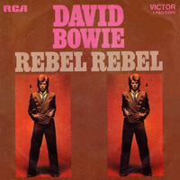
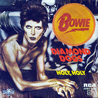
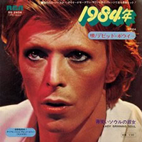

1974 - DIAMOND DOGS |
||||
Guy Peellaert and Nik Cohn's illustrated book, Rock Dreams, cut through the rock'n'roll fantasy in 1973, puncturing the myths that had grown around such idols as Elvis Presley and The Rolling Stones. Getting in on the joke themselves, the Stones commissioned their own Peellaert illustration for their 1974 album, It's Only Rock'n'Roll, but Bowie realised the true potential of a Peellaert album cover when he had the Belgian illustrator paint him as a half-man, half-dog mutant flanked by freak-show mutts right out of Diamond Dogs fictional Hunger City. Controversially, Peellaert had included Bowie's diamond dog's bollocks in the original painting - which could be seen when the gatefold sleeve was fully opened. The offending genitalia was airbrushed out for most commercial pressings, though some uncensored copies exist, and can now change hands for four-figure sums. Peellaert's uncensored image wasn't officially used until a 1990 reissue of the album. Photographer: Terry O'Neill | Illustrator: Guy Peellaert |
||||
FUTURE LEGEND And in the death As the last few corpses lay rotting on the slimy thoroughfare The shutters lifted an inch in temperance building, high on Poacher's Hill And red mutant eyes gazed down on Hunger City No more big wheels Fleas the size of rats sucked on rats the size of cats And ten thousand peoploids split into small tribes Coveting the highest of the sterile skyscrapers Like packs of dogs assaulting the glass fronts of Love-Me Avenue Ripping and re-wrapping mink and shiny silver fox, now legwarmers Family badge of sapphire and cracked emerald Any day now, the year of the Diamond Dogs "This ain't rock and roll! This is genocide!" DIAMOND DOGS This ain't rock 'n' roll, this is genocide! As they pulled you out of the oxygen tent You asked for the latest party With your silicone hump and your ten inch stump Dressed like a priest you was Tod Browning's Freak you was Crawling down the alley on your hands and knee I'm sure you're not protected, for it's plain to see The Diamond Dogs are poachers and they hide behind trees Hunt you to the ground they will, mannequins with kill appeal (Will they come?) I'll keep a friend serene (Will they come?) Oh baby, come on to me (Will they come?) Well, she's come, been and gone Come out of the garden, baby You'll catch your death in the fog Young girl, they call them the Diamond Dogs Young girl, they call them the Diamond Dogs The Halloween Jack is a real cool cat And he lives on top of Manhattan Chase The elevator's broke, so he slides down a rope Onto the street below, oh Tarzan, go man go Meet his little hussy with his ghost town approach Her face is sans feature, but she wears a Dali brooch Sweetly reminiscent, something mother used to bake Wrecked up and paralysed, Diamond Dogs are stabilised (Will they come?) I'll keep a friend serene (Will they come?) Oh baby, come on to me (Will they come?) Well, she's come, been and gone Come out of the garden, baby You'll catch your death in the fog Young girl, they call them the Diamond Dogs Young girl, they call them the Diamond Dogs (Oh-oh-ooh) call them the Diamond Dogs (Oh-oh-ooh) call them the Diamond Dogs Oh, hoo! Ah ooh! In the year of the scavenger, the season of the bitch Sashay on the boardwalk, scurry to the ditch Just another future song, lonely little kitsch (There's gonna be sorrow) try and wake up tomorrow (Will they come?) I'll keep a friend serene (Will they come?) Oh baby, come on to me (Will they come?) Well, she's come, been and gone Come out of the garden, baby You'll catch your death in the fog Young girl, they call them the Diamond Dogs Young girl, they call them the Diamond Dogs Oh-oh-ooh, call them the Diamond Dogs Oh-oh-ooh, call them the Diamond Dogs Bow-wow, woof woof, bow-wow, wow Call them the Diamond Dogs Dogs! Call them the Diamond Dogs, call them, they call them Call them the Diamond Dogs, call them, call them, ooh hoo! Call them the Diamond Dogs Keep cool, Diamond Dogs rule, OK Hey! Hey! Hey! Hey! (Beware of the Diamond Dogs) (Beware of the Diamond Dogs) (Beware of the Diamond Dogs) (Beware of the Diamond Dogs) SWEET THING It's safe in the city To love in a doorway To wrangle some screams from the dawn And isn't it me Putting pain in a stranger? Like a portrait in flesh, who trails on a leash Will you see that I'm scared and I'm lonely? So I'll break up my room, and yawn and I Run to the centre of things Where the knowing one says: "Boys, Boys, it's a sweet thing Boys, Boys, it's a sweet thing, sweet thing If you want it, boys, get it here, thing For hope, boys, is a cheap thing, cheap thing" I'm glad that you're older than me Makes me feel important and free Does that make you smile, isn't that me? I'm in your way, and I'll steal every moment If this trade is a curse, then I'll bless you And turn to the crossroads of Hamburgers, and "Boys, Boys, it's a sweet thing Boys, Boys, it's a sweet thing, sweet thing If you want it, boys, get it here, thing For hope, boys, is a cheap thing, cheap thing" CANDIDATE I'll make you a deal, like any other candidate We'll pretend we're walking home 'cause your future's at stake My set is amazing, it even smells like a street There's a bar at the end where I can meet you and your friend Someone scrawled on the walls "I smell the blood of Les Tricoteuses" Who wrote up scandals in other bars I'm having so much fun with the poisonous people Spreading rumours and lies and stories they made up Some make you sing and some make you scream One makes you wish that you'd never been seen But there's a shop on the corner that's selling papier-mâché Making bullet-proof faces; Charlie Manson, Cassius Clay If you want it, boys, get it here, thing So you scream out of line: "I want you! I need you! Anyone out there? Any time?" Tres butch little number whines "Hey dirty, I want you When it's good, it's really good, and when it's bad I go to pieces" If you want it, boys, get it here, thing Well, on the street where you live I could not hold up my head For I gave all I have in another bed On another floor, in the back of a car In the cellar of a church with the door ajar Well, I guess we must be looking for a different kind But we can't stop trying 'til we break up our minds 'Til the sun drips blood on the seedy young knights Who press you on the ground while shaking in fright I guess we could cruise down one more time With you by my side, it should be fine We'll buy some drugs and watch a band Then jump in the river holding hands SWEET THING (REPRISE) If you want it, boys, get it here, thing For hope, boys, is a cheap thing, cheap thing Is it nice in your snow storm, freezing your brain? Do you think that your face looks the same? Then let it be, it's all I ever wanted It's a street with a deal and a taste It's got claws, it's got me, it's got you REBEL REBEL You've got your mother in a whirl She's not sure if you're a boy or a girl Hey, babe, your hair's alright Hey, babe, let's go out tonight You like me and I like it all We like dancing and we look divine You love bands when they're playing hard You want more and you want it fast They put you down, they say I'm wrong You tacky thing, you put them on Rebel Rebel, you've torn your dress Rebel Rebel, your face is a mess Rebel Rebel, how could they know? Hot tramp, I love you so Don't ya? Doo doo doo-doo doo doo-doo doo You've got your mother in a whirl 'Cause she's not sure if you're a boy or a girl Hey, babe, your hair's alright Hey, babe, let's stay out tonight You like me and I like it all We like dancing and we look divine You love bands when they're playing hard You want more and you want it fast They put you down, they say I'm wrong You tacky thing, you put them on Rebel Rebel, you've torn your dress Rebel Rebel, your face is a mess Rebel Rebel, how could they know? Hot tramp, I love you so Don't ya? Ooh! Doo doo doo-doo doo doo-doo doo Doo doo doo-doo doo doo-doo doo Rebel Rebel, you've torn your dress Rebel Rebel, your face is a mess Rebel Rebel, how could they know? Hot tramp, I love you so (don't ya?) You've torn your dress, your face is a mess You can't get enough, but enough ain't the test You've got your transmission and your live wire You got your cue line and a handful of ludes You wanna be there when they count up the dudes And I love your dress You're a juvenile success Because your face is a mess So how could they know? I said, how could they know? So what you wanna know? Calamity's child, chi-chi, chi-chi Where'd you wanna go? What can I do for you? Looks like I've been there too 'Cause you've torn your dress And your face is a mess Ooh, your face is a mess Ooh, ooh, so how could they know? Ah, ah, how could they know? Ah, ah ROCK 'N' ROLL WITH ME You always were the one that knew They sold us for the likes of you I always wanted new surroundings A room to rent while the lizards lay crying in the heat Trying to remember who to meet I would take a foxy kind of stand While tens of thousands found me in demand When you rock and roll with me No one else I'd rather be Nobody here can do it for me I'm in tears again When you rock and roll with me Gentle hearts are counted down The queue is out of sight and out of sounds Me, I'm out of breath, but not quite doubting I've found a door which lets me out! When you rock and roll with me No one else I'd rather be Nobody down here can do it for me I'm in tears again When you rock and roll with me Oh, when you rock and roll with me There's no one else I'd rather be Nobody down here can do it for me When you rock and roll with me When you rock and roll, when you rock and roll with me No one else I'd rather, I'd rather be Nobody here can do it for me I'm in tears, I'm in tears When you rock and roll with me WE ARE THE DEAD Something kind of hit me today I looked at you and wondered if you saw things my way People will hold us to blame It hit me today, it hit me today We're taking it hard all the time Why don't we pass it by? Just reply, you've changed your mind We're fighting with the eyes of the blind Taking it hard, taking it hard Yet now We feel that we are paper, choking on you nightly They tell me, "Son, we want you, be elusive, but don't walk far" For we're breaking in the new boys, deceive your next of kin For you're dancing where the dogs decay, defecating ecstasy You're just an ally of the leecher Locator for the virgin King, but I love you in your fuck-me pumps And your nimble dress that trails Oh, dress yourself, my urchin one, for I hear them on the rails Because of all we've seen, because of all we've said We are the dead One thing kind of touched me today I looked at you and counted all the times we had laid Pressing our love through the night Knowing it's right, knowing it's right Now I'm hoping some one will care Living on the breath of a hope to be shared Trusting on the sons of our love That someone will care, someone will care But now We're today's scrambled creatures, locked in tomorrow's double feature Heaven's on the pillow, its silence competes with hell It's a twenty-four hour service, guaranteed to make you tell And the streets are full of pressmen Bent on getting hung and buried And the legendary curtains are drawn 'round Baby Bankrupt Who sucks you while you're sleeping It's the theatre of financiers Count them, fifteen 'round a table White and dressed to kill Oh caress yourself, my juicy For my hands have all but withered Oh dress yourself my urchin one, for I hear them on the stairs Because of all we've seen, because of all we've said We are the dead We are the dead We are the dead 1984 Someday they won't let you, now you must agree The times they are a-telling and the changing isn't free You've read it in the tea leaves, and the tracks are on TV Beware the savage jaw of 1984 They'll split your pretty cranium, and fill it full of air And tell that you're eighty, but brother, you won't care You'll be shooting up on anything, tomorrow's never there Beware the savage jaw of 1984 Come see, come see, remember me? We played out an all night movie role You said it would last, but I guess we enrolled In 1984 (who could ask for more) 1984 (who could ask for mor-or-or-or-ore) (Mor-or-or-or-ore) I'm looking for a vehicle, I'm looking for a ride I'm looking for a party, I'm looking for a side I'm looking for the treason that I knew in '65 Beware the savage jaw of 1984 Come see, come see, remember me? We played out an all night movie role You said it would last, but I guess we enrolled In 1984 (who could ask for more) 1984 (who could ask for mor-or-or-or-ore) (Mor-or-or-or-ore) 1984 BIG BROTHER Don't talk of dust and roses Or should we powder our noses? Don't live for last year's capers Give me steel, give me steel, give me pulsars unreal He'll build a glass asylum With just a hint of mayhem He'll build a better whirlpool We'll be living from sin Then we can really begin Please saviour, saviour, show us Hear me, I'm graphically yours Someone to claim us, someone to follow Someone to shame us, some brave Apollo Someone to fool us, someone like you We want you Big Brother, Big Brother I know you think you're awful square But you made everyone and you've been every where Lord I think you'd overdose if you knew what's going down Someone to claim us, someone to follow Someone to shame us, some brave Apollo Someone to fool us, someone like you Someone to claim us, someone to follow Someone to shame us, some brave Apollo Someone to fool us, someone like you Someone to claim us, someone to follow Someone to shame us, some brave Apollo Someone to fool us, someone like you We want you Big Brother CHANT OF THE EVER-CIRCLING FAMILY Brother Ooh-ooh Shake it up, shake it up Move it up, move it up Brother Ooh-ooh Shake it up, shake it up Move it up, move it up Brother Ooh-ooh Shake it up, shake it up Move it up, move it up Brother Ooh-ooh Shake it up, shake it up Move it up, move it up Brother Ooh-ooh Shake it up, shake it up Move it up, move it up Brother Ooh-ooh Shake it up, shake it up Move it up, move it up Bro bro bro bro bro bro bro bro bro bro Bro bro bro bro bro bro bro bro bro bro Bro bro bro bro bro bro bro bro bro bro |
||||
SINGLES |
||||
   |
||||